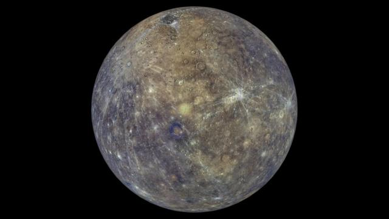
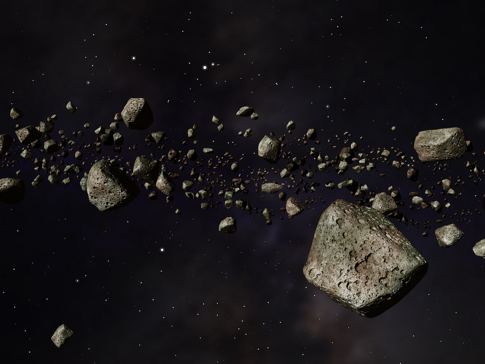

SISTEMA SOLAR
Sistema solar

Nuestro sistema solar alberga a ocho sorprendentes planetas. Algunos son pequeños y rocosos, otros son grandes y gaseosos. Algunos son tan calientes que, sobre su superficie, los metales se fundirían. Otros son tan fríos como el hielo.
Constantemente estamos aprendiendo cosas nuevas sobre nuestros planetas vecinos. Enviamos sondas espaciales a tomar fotografías, recolectar información y averiguar más sobre esos planetas.
Entre los demás objetos que integran el sistema solar se encuentran los asteroides (objetos espaciales rocosos que pueden tener kilómetros de diámetro) y los meteoroides (pequeños fragmentos de materia, similares a la piedra o al metal). Estos elementos se pueden encontrar, por ejemplo, en el Cinturón de Asteroides, una región entre las órbitas de Marte y Júpiter.
Finalmente, los cometas, cuerpos de hielo, polvo y gas que viajan a miles de kilómetros por hora por el espacio, también mantienen su propia órbita alrededor del Sol. La NASA estima que existen más de 100 mil millones de cometas en el sistema solar.
Caracteristicas
- Se formó hace 4.600 millones de años.
- En su centro se encuentra una estrella llamada Sol.
- Está conformado por cuatro planetas interiores y cuatro exteriores.
- Forma parte de la galaxia conocida como Vía Láctea.
- Los planetas que lo componen son gaseosos, terrestres y enanos.
Mercurio
Mercurio es el planeta más cercano al Sol y el más pequeño del sistema solar. Tiene una superficie rocosa y está cubierto de cráteres debido a la intensa actividad meteorítica. Su atmósfera es muy delgada y su temperatura varía drásticamente entre el día y la noche.
Caracteristicas
- Mercurio es el planeta más pequeño de nuestro sistema solar.
- Mercurio es un planeta terrestre y rocoso.
- Mercurio tiene una exosfera delgada.
- La superficie de Mercurio puede subir hasta 427 grados Celsius durante el día y bajar hasta -184 grados Celsius durante la noche.
- Los polos de Mercurio tienen hielo de agua.
Venus

Venus es el segundo planeta del sistema solar y es conocido como el "planeta gemelo" de la Tierra debido a su tamaño y composición similar. Sin embargo, su atmósfera es extremadamente densa y está compuesta principalmente por dióxido de carbono, lo que genera un efecto invernadero descontrolado y temperaturas superficiales extremadamente altas.
Caracteristicas
- Es el planeta más cálido del sistema solar.
- Es un planeta terrestre: es pequeño y rocoso.
- Su atmósfera es densa: atrapa el calor y por eso es tan caluroso.
- Tiene una superficie activa, que incluye volcanes.
- Gira en dirección contraria a la Tierra y la mayoría de los planetas.
- Un día dura 243 días terrestres.
- Un año dura 225 días terrestres.
Tierra

Nuestro hogar, el planeta Tierra, es un planeta terrestre y rocoso. Tiene una superficie sólida y activa, con montañas, valles, cañones, llanuras y mucho más. La Tierra es especial porque es un planeta océano, ya que el agua cubre el 70% de su superficie.
Caracteristicas
- La Tierra es un planeta terrestre. Es pequeño y rocoso.
- La atmósfera terrestre tiene el grosor perfecto para mantener la temperatura templada del planeta, para que seres vivos como nosotros podamos vivir en él.
- Un día en la Tierra dura algo menos de 24 horas.
- Un año en la Tierra dura 365,25 días.
- La Tierra es el único planeta que tiene solo una luna.
- La Tierra es el tercer planeta desde el Sol en nuestro sistema solar.
Marte

Marte es un mundo frío y desértico. La temperatura media en Marte es de -65 grados Celsius (-85 grados Fahrenheit), muy por debajo del punto de congelación. Marte tiene la mitad del tamaño de la Tierra. A veces es llamado el planeta rojo. Es rojo debido al hierro oxidado de su suelo.
Caracteristicas
- Marte es un planeta terrestre. Es pequeño y rocoso.
- Marte tiene una atmósfera delgada y enrarecida.
- Marte tiene una atmósfera activa, pero la superficie del planeta no está activa. Sus volcanes están muertos
- Un día en Marte dura 24,6 horas. Es apenas un poco más de un día en la Tierra.
- Un año en Marte son 687 días terrestres. Es casi el doble de largo que un año en la Tierra
- Marte tiene dos lunas. Sus nombres son Fobos y Deimos.
Cinturón de Asteroides
texto
Caracteristicas
Júpiter

texto
Caracteristicas
Saturno

texto
Caracteristicas
Urano

texto
Caracteristicas
Neptuno

texto